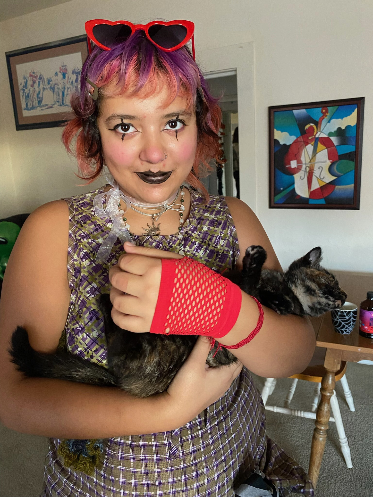

Sam's Homepage

About Me
I'm a fourth year Community Studies and Art major. I work at the queer resource center on campus, and my favorite mediums are sewing, sculpture,oil pastels, and I am trying to learn guitar. I love cats, clowns, nature, and my friends.